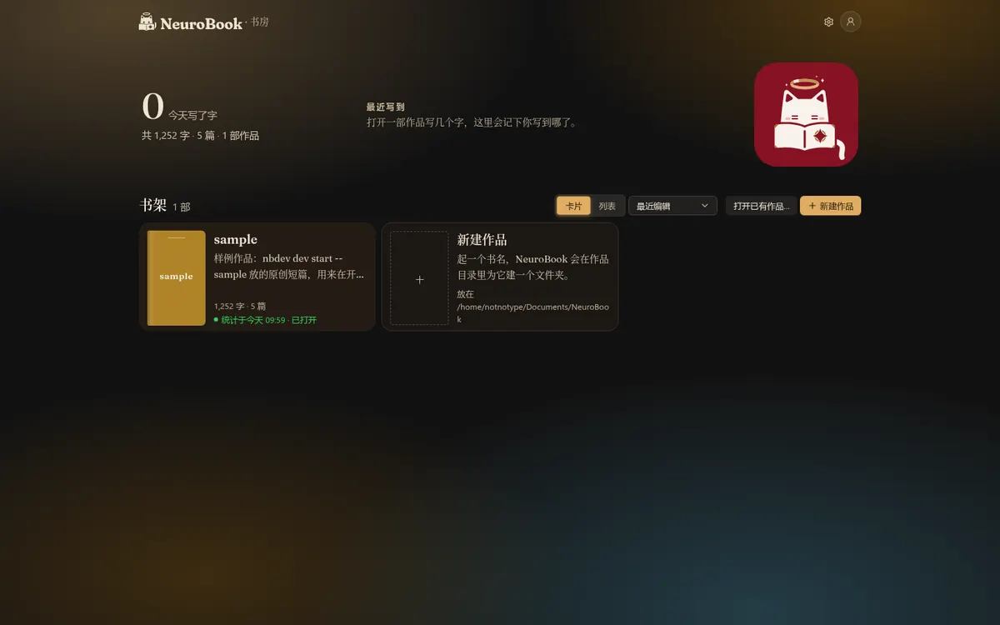
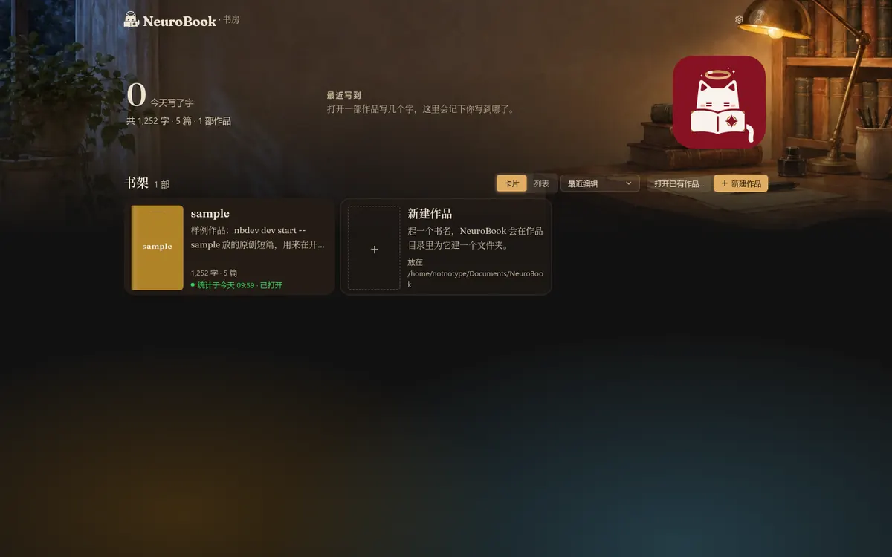
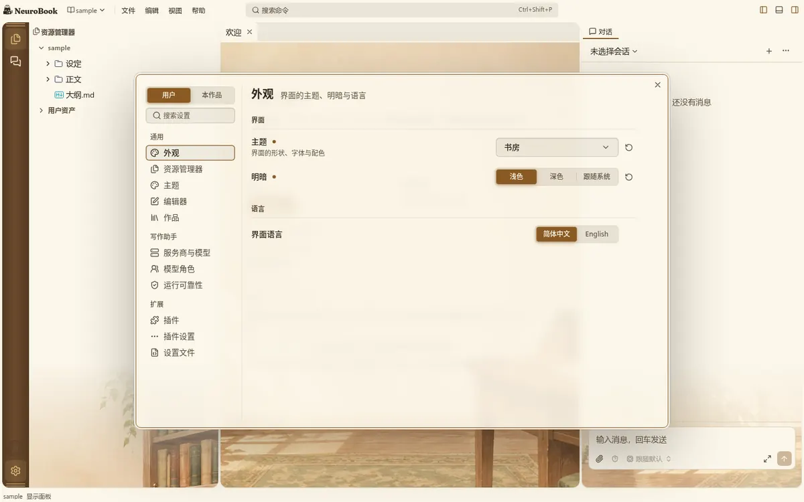
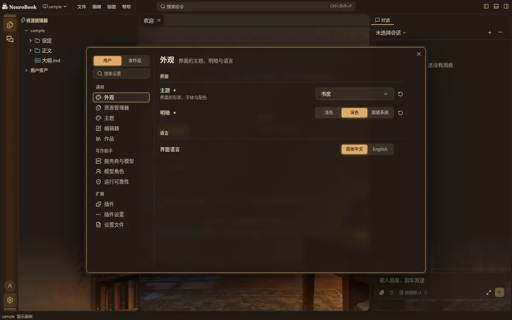
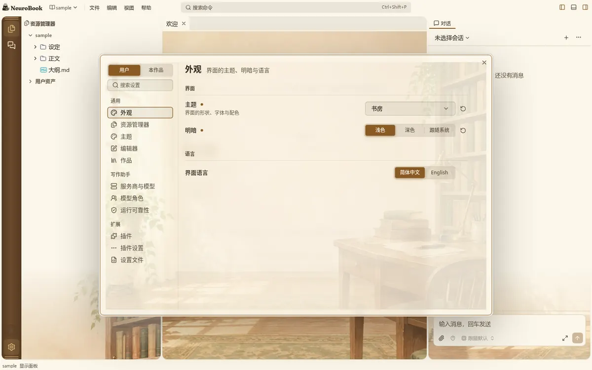
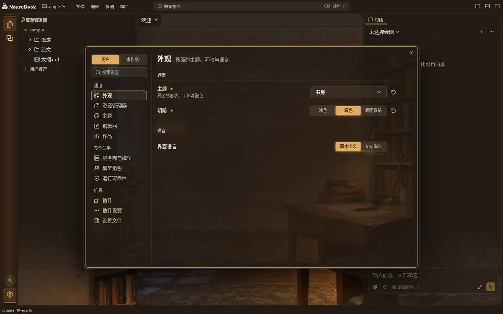
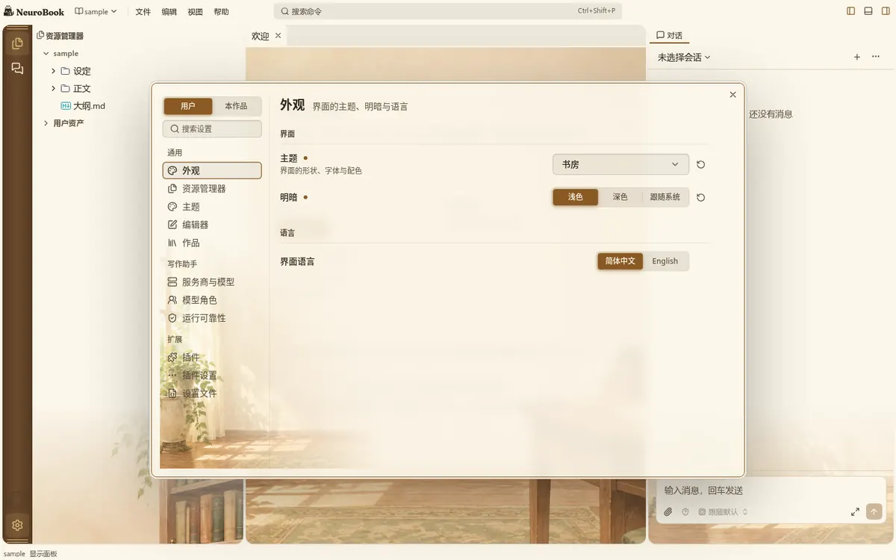
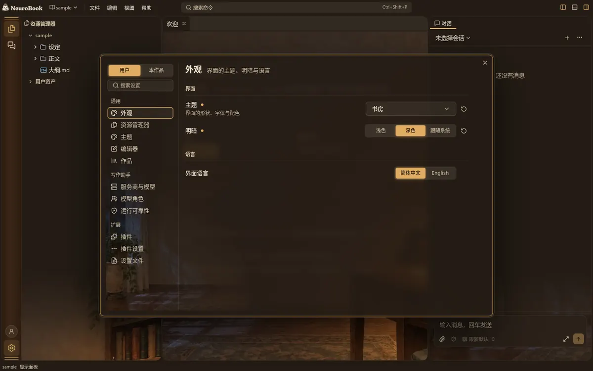

书架页与设置窗口的场景
书房主题现在只有欢迎页、正文两侧、侧栏与右栏的下角有场景图；书架页和设置窗口只跟配色。这一轮看两处要不要、怎么放场景。
下面每张都是真实的书房主题页面（真实书架页、真实设置窗口，亮暗各一张），候选的场景层是我在运行中的页面上临时叠出来的，没有改产品代码，所以看到的就是落地后的效果（渐隐的边、遮罩的深浅都是参数，定了方向可以微调）。每道题的“现状”就是现在的样子。
我的做法（不另问）：不新增取景声明字段，书架页与设置窗口都沿用空状态的取景（crop.empty），所有书房之外的主题照常没有这两处场景；高对比度偏好下不画。
书架页放不放场景，怎么放 待定
现状：不放，只跟配色
书架页是一张纯色加一层淡渐变。

A：整页铺场景，上面罩一层页面底色（约 62%）
和欢迎页一个观感，场景在卡片之间、页面四周都看得见；书多时卡片盖住一部分，但文字始终在实底的卡片上，对比度不受影响。标志与齿轮压在图上，偏轻。
B：顶部通栏，往下淡出（约 380px）
像杂志的刊头插图，下面书架区干净。书房这张图的灯与书堆在中下部，通栏里只裁到窗与书架上半，台灯被切一半，效果弱。

C：右下角一块，往左上淡出
最克制，几乎不影响读；但书架上作品一多，卡片就把右下角盖住，大多数时候看不见。
推荐：A。书架是进来第一眼看到的页面，和欢迎页同一个整页观感最完整；文字在实底卡片上，不影响读。如果你更看重“干净”，选 C。
设置窗口放不放场景，怎么放 待定
现状：不放
设置窗口是半透明的薄糊面（72%），后面工作台的场景会透出一点；但后面开着普通文件时没有场景，窗口就是一块素面。


A：整窗一层淡底（约 16% 不透明度）
窗口自己带场景，不管后面是什么都有书房的味道；淡到文字、控件、对比度几乎不受影响。


B：左栏左下角，往右上淡出
场景只在导航栏下角，更有“摆件”感；但图正好压在最下面几项（插件、设置文件）的文字下面，读起来吃力。


推荐：A（整窗淡底）。它是三种里唯一不挑后面页面的；B 会让导航项的文字压在图上。如果你觉得设置是干活的地方不需要，选“现状”也完全合理。